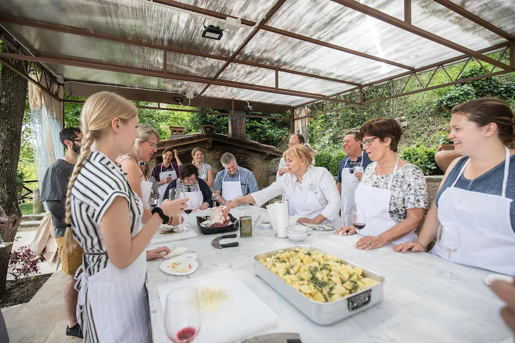
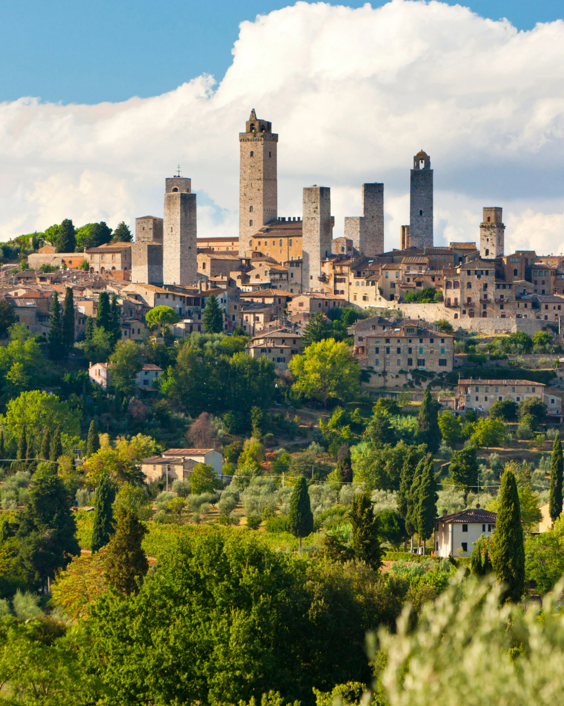
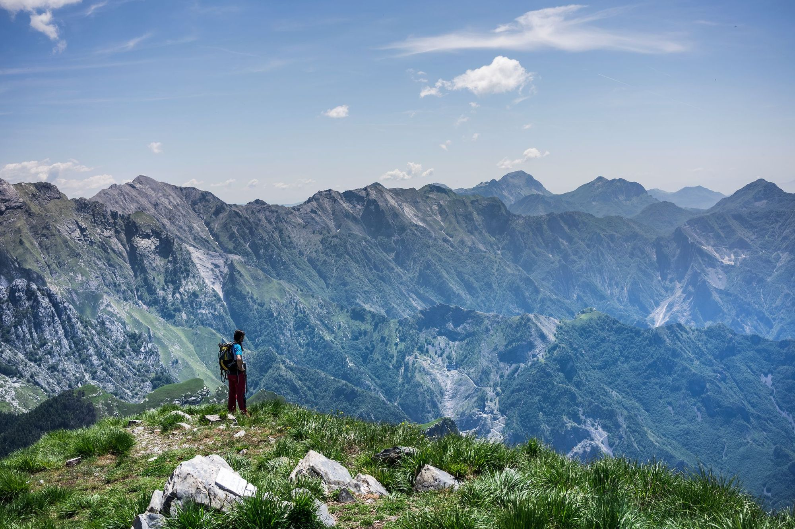
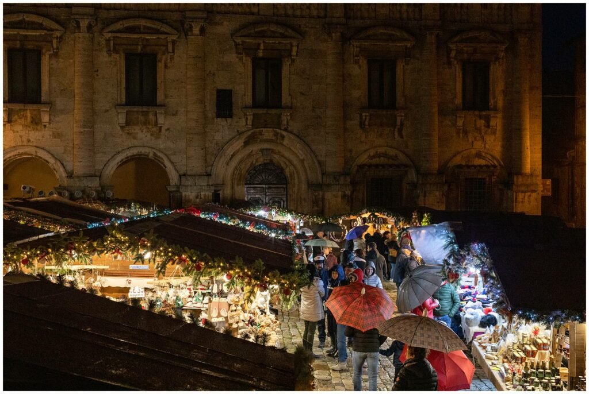

Day Activities

Cooking Classes at Fattoria La Vialla
Fattoria La Vialla is an organic farm located in the picturesque countryside of Tuscany, specifically in the Casentino Valley. Participants engage in hands-on cooking, learning techniques for preparing various Tuscan dishes, including homemade pasta, sauces, and local specialties. The classes often cater to all skill levels, from beginners to more experienced cooks.

Historic Town of Florence
In Florence, Italy, visitors can immerse themselves in the rich cultural heritage and stunning architecture of this historic town. Begin your exploration at the iconic Duomo (Cathedral of Santa Maria del Fiore), where you can climb to the top of the dome for breathtaking views of the city. Stroll across the famous Ponte Vecchio, lined with jewelry shops, and discover the impressive Palazzo Vecchio, the historic town hall, where you can climb the tower for panoramic views. Enjoy the serene beauty of the Boboli Gardens behind the Pitti Palace, or admire Michelangelo's masterpiece, David, at the Galleria dell'Accademia.

Hiking in the Apuan Alps
Nestled in the heart of Tuscany, the Apuan Alps offer an unparalleled hiking experience, showcasing stunning natural beauty, unique geological formations, and rich biodiversity. From the rugged limestone cliffs to the serene woodlands, the Apuan Alps provide a diverse landscape perfect for outdoor enthusiasts. Hikers can enjoy panoramic views from the mountain summits that are simply breathtaking.
Night Activities

Night Markets
Tuscany's night markets are vibrant hubs of local culture and cuisine, offering a delightful experience for visitors. One of the most famous locations is the Pisa Night Market, held during the summer months, where you can browse an array of artisan goods, handmade crafts, and local delicacies. In Florence, the San Lorenzo Market extends into the evening, showcasing a variety of street food options, including traditional Tuscan dishes and international flavors. Visitors can enjoy live music, discover unique souvenirs, and immerse themselves in the lively atmosphere while sampling local wines and cheeses. These markets not only provide a taste of Tuscany's culinary delights but also foster a sense of community and connection among locals and travelers alike.

Wine Tasting Tours
Wine tasting tours in Tuscany are a perfect way to explore the region's renowned vineyards and savor its exquisite wines. Many tours offer visits to picturesque wineries, where guests can learn about the winemaking process, enjoy guided tastings, and indulge in gourmet food pairings. Popular wine regions like Chianti, Montalcino, and Montepulciano are famous for their beautiful landscapes and exceptional wines, including Chianti Classico and Brunello di Montalcino. Whether you're a wine connoisseur or simply looking for a delightful experience, a wine tasting tour promises to be an unforgettable journey through Tuscany's rich viticultural heritage.

Stargazing in the Countryside
Away from the bright lights of the city, Tuscany's countryside offers breathtaking opportunities for stargazing. With its clear skies and minimal light pollution, visitors can experience a mesmerizing view of the stars, planets, and constellations. Many rural areas offer guided stargazing tours, complete with telescopes and knowledgeable guides who can share insights about the cosmos. Whether lying on a blanket under the stars or participating in an organized tour, stargazing in Tuscany is a peaceful and awe-inspiring experience that allows you to connect with the beauty of the universe.